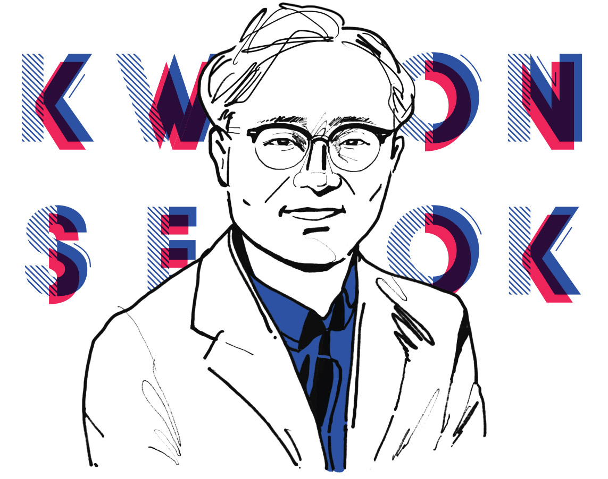

때론 온화하게
때론 강하게
때론 강하게
권석
원익아이피에스 SKH고객지원팀2022 봄호 Vol.67

권석
원익아이피에스 SKH고객지원팀팀원들이 생각하는 권석,
그가 언더커버리더인
6가지 이유
1. 개척자, 원익아이피에스 콜롬버스 나타나다
미지의 세계의 대륙을 발견한 콜럼버스처럼 개척자다운 면모를 가지고 있다.2. 모든 팀원의 역량을 강화하다
업무를 모든 팀원에게 골고루 분배해 팀원의 성장을 도모한다.3. 소통의 달인, 든든한 버팀목이다
팀원들과의 소통을 매우 중요하게 생각하며, 한 명 한 명에게 관심을 쏟는 아버지 같은 존재다.4. 알파고, 데이터 기반으로 일하다
데이터를 기반으로 객관적이고 명확한 근거를 제시하고 검증하는 방식으로 업무를 진행한다.5. 명확한 지시를 통해 이끌다
두루뭉실한 지시보다 명확한 업무의 지시와 방향성을 제시한다.6. 사람 대 사람으로 대하다
팀원들과의 대화 시 항상 말을 놓지 않으며, 팀원들의 의견을 경청한 후 자신의 의견을 말한다.팀원 Say
현재의 SKH고객지원팀의 근간을 만들고 조직 체계를 완성하셨습니다. SK하이닉스 진입 초기, 아무것도 갖추어지지 않은 환경 속에서 신규 고객에 대한 고객지원 체계를 만들고 조직원들의 역량을 향상 시켜 어려운 대외환경 속에서도 고객 만족을 실현하는 SKH고객지원팀을 만드신 일등공신이었습니다.01.
개척자,권석 Say
리더의 역할은 환경과 방법을 만들어주는 일이라고 생각합니다. SK하이닉스와 처음 하는 일이기 때문에 여러 수치를 데이터화하는 일이 우선이었습니다. 처음에는 안 하던 일을 하게 되어 팀원이 다소 힘들어했지만, 이 작업이 왜 필요한지 잘 설명하여 지금은 성과를 내기 위한 분석 활동에 있어 없어서는 안 되는 기초 단위 활동으로 자리 잡았습니다.02.
모든 팀원의03.
소통의 달인,04.
알파고,05.
명확한 지시를06.
사람 대 사람으로